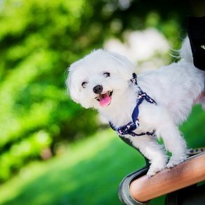
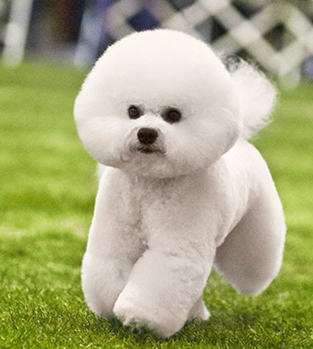
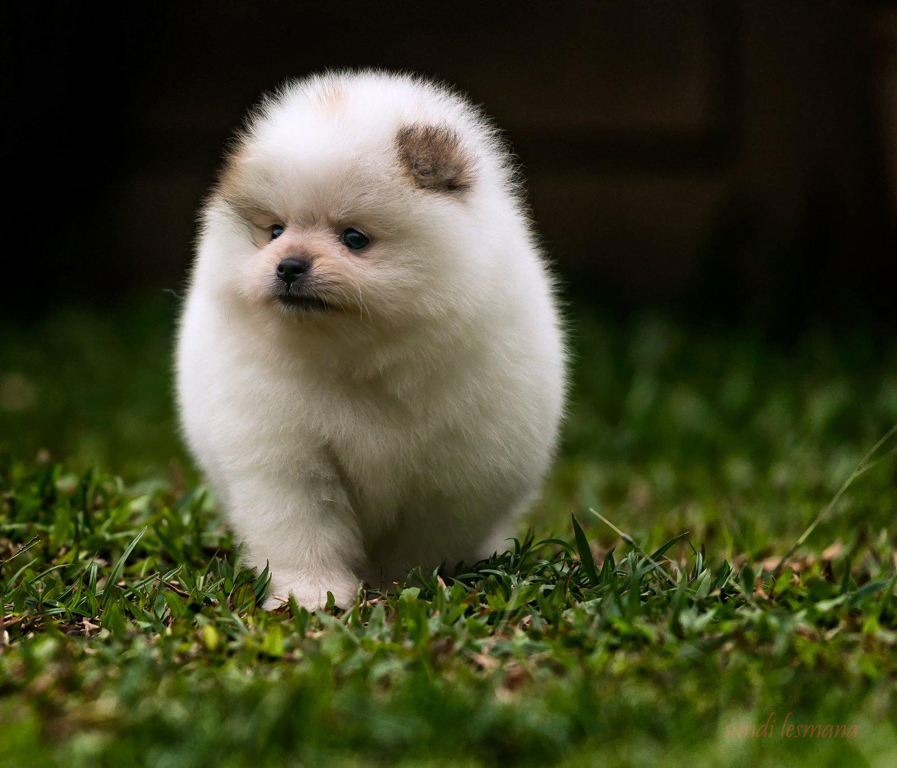
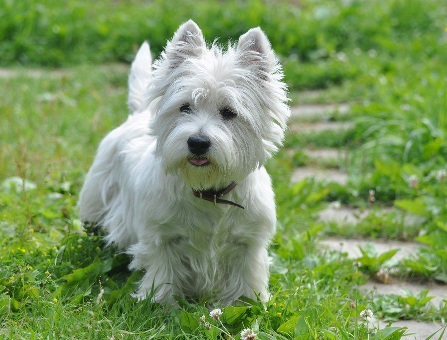

Содержание
Мальтезе (мальтийская болонка)
Эти маленькие белые собачки гиперактивны, коммуникабельны и миролюбивы. Они ревнуют своего хозяина к другим животным и требуют постоянного внимания. Любой чужак для мальтезе – враг, на которого они тут же звонко лают. Болонки не переносят одиночество и, когда остаются одни, могут грызть провода, мебель, царапать пол и стены. Они недисциплинированны, поэтому воспитанию стоит уделять пристальное внимание.
Гулять с мальтезе достаточно 15–20 мин., так как они быстро устают. Мыть собаку следует раз в неделю шампунем и кондиционером для легкого расчесывания.
Бишон фризе (французская болонка)
Это одна из самых маленьких пород белых собак. Представители бишон фризе очень энергичные, активные и коммуникабельные. Они отлично подходят для семей с детьми. Собаки легко поддаются дрессировке, но не могут долго концентрироваться на одном занятии.
Бишоны практически не линяют, но пышная шерсть нуждается в особом уходе. "Локоны" ежедневно надо расчесывать, использовать пуходерку, купать раз в месяц с шампунем и кондиционером, подстригать шерсть два-три раза в месяц. В питание "французов" следует добавлять сырое мясо, овощи, морскую рыбу и гречку.
Померанский шпиц
Собаки этой породы любопытные, добродушные и веселые. Они громко и звонко лают на малейший шорох, поэтому шпиц может стать отличным сторожем. Ладят с другими животными, но иногда могут демонстрировать свое превосходство. Собаки очень любят своих хозяев и стараются не отходить от них.
Шпицы любят игры на свежем воздухе, выгуливать их стоит дважды в день. Мыть этих белых собак достаточно один-два раза в месяц, затем обрабатывать шерсть кондиционером и сушить феном. Расчесывать следует каждый день, по мере необходимости стричь. Кормить специалисты советуют натуральной пищей или кормами.
Вест-хайленд-уайт-терьер
Собаки шумные и энергичные, признают хозяином лишь одного человека. Плохо справляются с одиночеством. Выгуливать их нужно два-три раза в день.
Представители этой породы не линяют, стричь их не стоит. Но вот шерсти нужно будет уделить особое внимание: она склонна желтеть. Чтобы убрать нежелательный оттенок, в шерсть втирают смесь из толченого мела и борной кислоты. После этого следует тщательно вычесать обычной расческой. Купают собак раз в месяц.
Представители этой породы жизнерадостные, игривые, подвижные и веселые. Они отлично ладят с животными и детьми. Вольпино громко лают, без должного воспитания они могут делать это без причины. Собаки совсем не признают чужаков и могут проявлять повышенную агрессию. Выгуливать шпица нужно дважды в день.
Вычесывать шерсть следует один-два раза в неделю, мыть три-четыре раза в год и стричь при необходимости. Основой питания должны быть либо суперпремиальные корма, либо субпродукты и морская рыба.